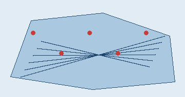

Harbour Lights Project
Quarterly review, spring 2026
1
What we changed

New lamps on the north pier
Timers set by the tide tables
Two spare units kept in the store
Source: harbour log, March
2
Next steps
Order the new lenses before May
Train the night crew on the timers
Budget: 4200 for the year
3